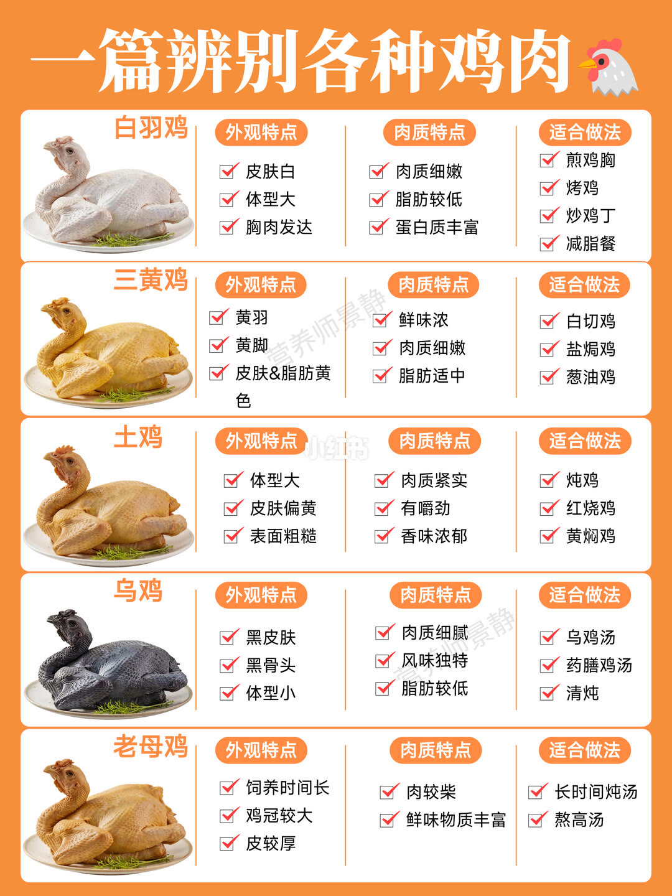
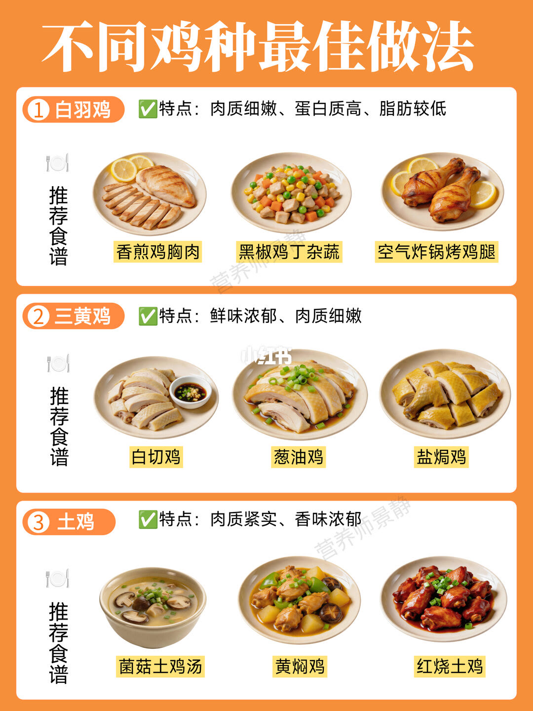
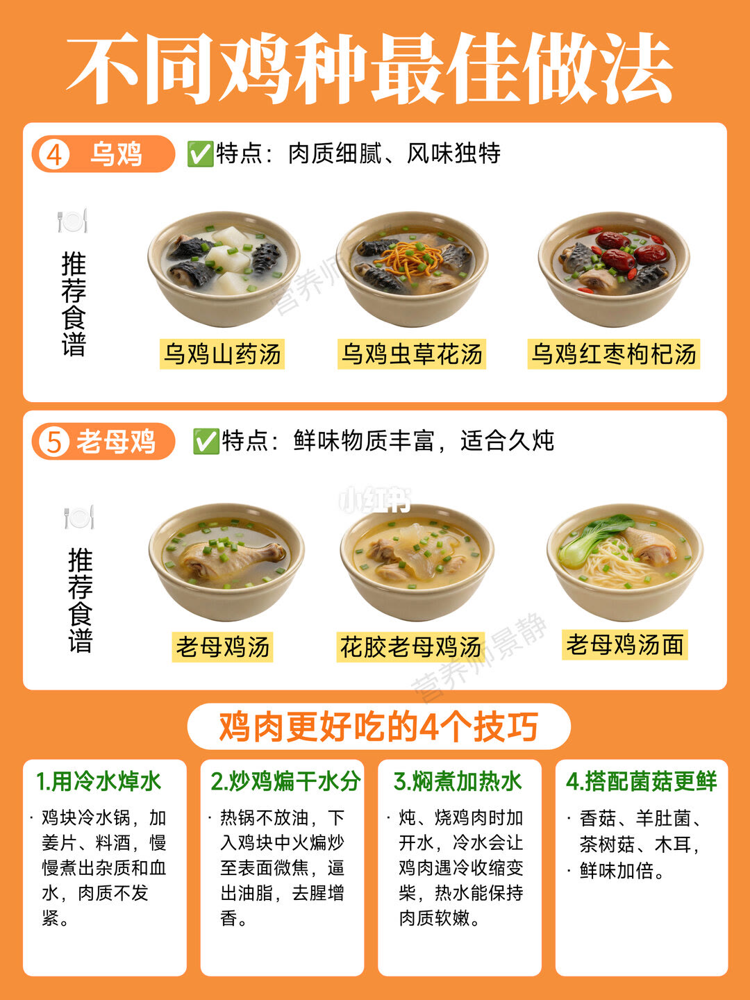
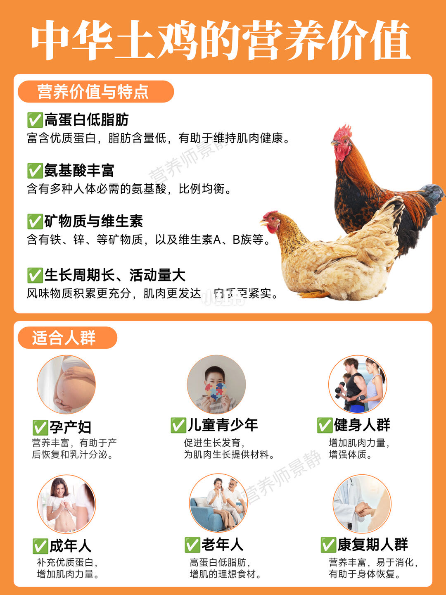

图文实录 · 小红书 · 营养师景静
一篇辨别各种鸡肉，看完买鸡不纠结了
作者的判断写在说明里：没有哪种鸡绝对更好，关键是选对用途。四页图按外观、肉质和菜来分白羽、三黄、土鸡、乌鸡和老母鸡。
1/4
五种鸡怎么认
白羽鸡皮很白、体型大、胸肉发达，肉细、脂肪较低、蛋白多，适合煎鸡胸、烤、炒鸡丁和减脂餐。三黄鸡皮和脂肪偏黄，鲜味足、脂肪中等，适合白切、盐焗、葱油鸡。土鸡皮黄、表面更粗，肉紧、有嚼劲，适合炖、红烧、黄焖。乌鸡皮骨发黑、体型较小，肉细、脂肪较低，适合汤和清炖。老母鸡饲养时间长，冠大、皮厚，肉相对柴，但耐炖，用来做高汤。

2/4
前三种的菜
白羽鸡：香煎鸡胸、黑椒鸡丁杂蔬、空气炸锅烤鸡腿。三黄鸡：白切鸡、葱油鸡、盐焗鸡。土鸡：菌菇土鸡汤、黄焖鸡、红烧土鸡。

3/4
乌鸡、老母鸡，和四条处理
乌鸡推荐山药汤、虫草花汤、红枣枸杞汤。老母鸡推荐老母鸡汤、花胶老母鸡汤、老母鸡汤面，特点写成鲜味物质多、适合久炖。文案另写：老母鸡不建议爆炒。
页下四条不限品种：冷水加姜片和料酒慢慢焯，去掉血沫，肉不容易柴；不放油、中火把鸡块煸到表面微焦，逼掉水和腥；焖的时候加热水，冷水会让肉缩紧发柴；香菇、羊肚菌、茶树菇、木耳用来加鲜。

4/4
中华土鸡被写成营养清单
这一页把「中华土鸡」说成地方优良鸡种的统称，列出高蛋白低脂肪、氨基酸种类和比例、铁锌和维生素 A 与 B 族、生长周期长且活动量大所以肉更紧。适合人群写成孕产妇、儿童青少年、健身、成年人、老年人和康复期。这些是作者页面上的营养说法，图上没有检测报告或摄入量。

汇总
按菜选鸡，不按贵贱
煎、烤、鸡丁用白羽；白切和盐焗用三黄；黄焖红烧用土鸡；汤用乌鸡或老母鸡，老母鸡不走爆炒。依据在第 1–3 页。第 4 页的氨基酸、维生素和「适合所有人」没有给出量，不能当成营养结论。第 3 页的冷水焯、不放油煸、加热水，是操作建议，也没有火候分钟数。